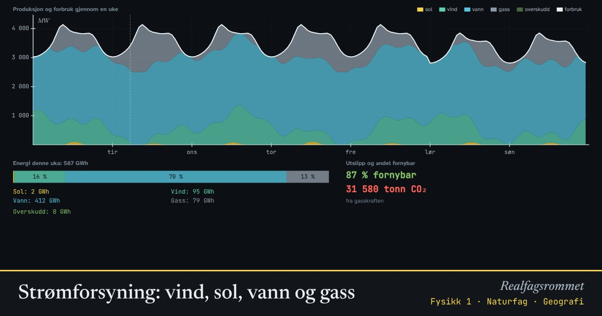

Strømforsyning: vind, sol, vann og gass
Strømmen må produseres i samme øyeblikk som den brukes. Sol og vind varierer med været, mens vannkraft kan reguleres. Bygg ut kraftsystemet og se om forbruket dekkes en hel uke, og hvor mye CO₂ det blir.
Start animasjonen
Formler
Om animasjonen
Kurven øverst er forbruket. Det er høyest om vinteren og på dagtid, med topper om morgenen og ettermiddagen. Produksjonen må hele tiden være like stor.
Solkraft gir bare om dagen, og lite om vinteren i Norge. Vindkraft varierer med været. Når sol og vind ikke dekker forbruket, brukes vannkraft, som kan skrus opp og ned fordi vannet kan lagres i magasiner. Resten dekkes her av gasskraft med CO₂-utslipp.
Når sol og vind gir mer enn forbruket, blir det overskudd. Det kan eksporteres, lagres (for eksempel ved å spare vann i magasinene), eller produksjonen må stoppes.
Påstander om energi og klima bør sjekkes med tall: Hvor mye installert effekt? Hvor stor andel av tiden produserer den? Hva gjør vi når det er vindstille om vinteren? Modellen er forenklet og bygger ikke på data fra et bestemt land.
Prøv dette
- Hvor mye gasskraft trengs en vindstille vinteruke med standardinnstillingene?
- Hvor mye solkraft må du bygge for å merke forskjell om vinteren? Enn om sommeren?
- Hvorfor er vannkraft så verdifull i et kraftsystem med mye vind og sol?
- Vurder påstanden: «Vi kan bare bygge mer vindkraft, så slipper vi utslipp.»
Kompetansemål
- Naturfag: Energi og energiomforming (også i yrkesfagene)
- Fysikk 1: Påstander og argumenter om energi og klima
Mer om energi, varme og svingninger
- Energibevaring: stilling, fart og varme
- Energiomforming og virkningsgrad
- Temperatur og varme: is blir til damp
- Spesifikk varmekapasitet: varmt og kaldt blandes
- Partikkelmodellen og den ideelle gassloven
- Fjær og harmonisk svingning
- Energikvalitet: varmepumpe og panelovn
- Vindkraft: hvor mye energi er det i vinden?
Mer om energi og energikilder
- Energiomforming og virkningsgrad
- Energibevaring: stilling, fart og varme
- Temperatur og varme: is blir til damp
- Vindkraft: hvor mye energi er det i vinden?